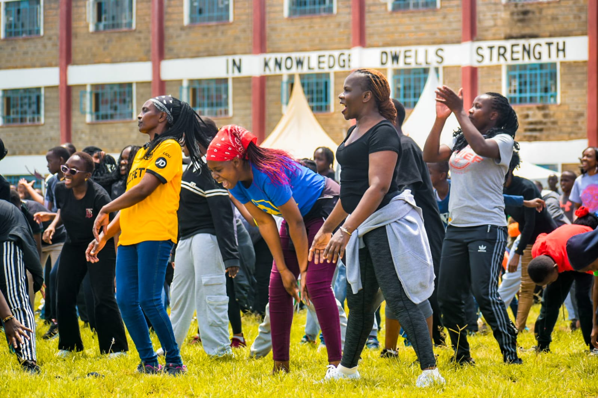
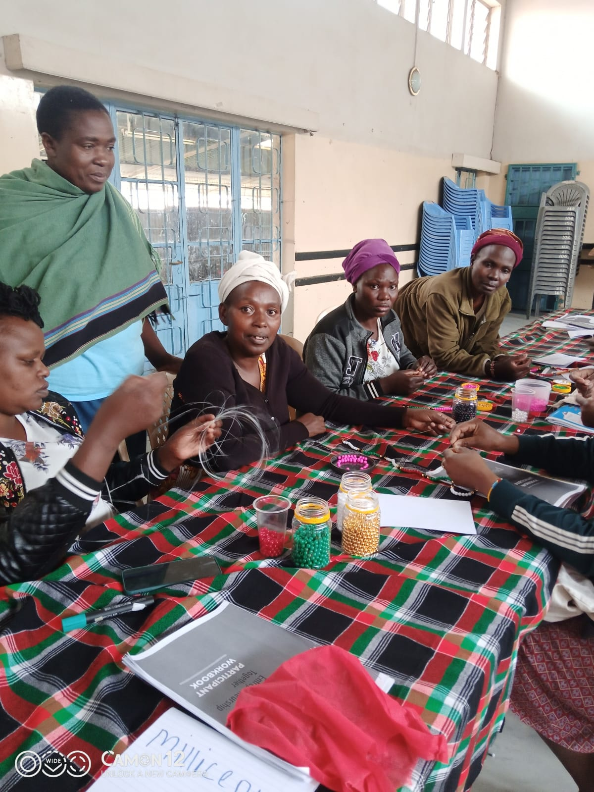
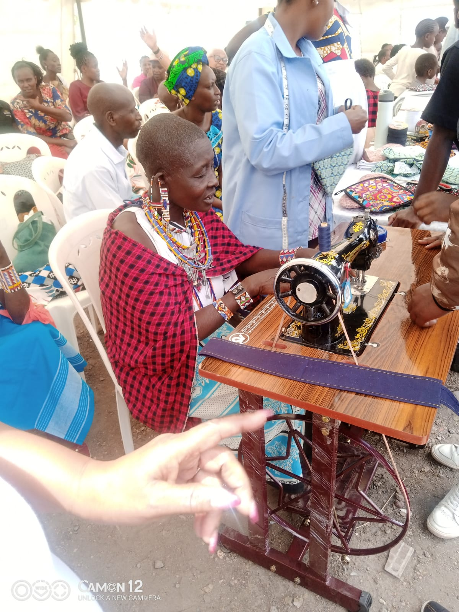

WOMEN
EMPOWERMENT
PROGRAM
Breaking cycles of economic dependency by equipping women with income-generating skills, market access, and financial independence.
Economic Power Changes Everything
When women earn, entire households benefit. Our Women's Empowerment Program goes beyond skills — it builds dignity, independence, and lasting community change.
In many informal settlements, women face significant economic and social barriers that limit their ability to earn a stable income and fully participate in community life. Limited access to skills training, financial services, and markets often traps households in cycles of poverty and dependence.
This economic vulnerability is closely linked to broader social challenges, including gender-based violence, early pregnancies, and increased health risks such as HIV and AIDS.
Our program addresses these interconnected realities by giving women the tools to earn, save, and lead — transforming not just individual lives but entire families and communities.

Trapped in Cycles of Dependency
In many informal settlements, women face significant economic and social barriers that limit their ability to earn a stable income and fully participate in community life. Limited access to skills training, financial services, and markets often traps households in cycles of poverty and dependence. This economic vulnerability is closely linked to broader social challenges, including gender-based violence, early pregnancies, and increased health risks such as HIV and AIDS.

Skills, Markets, and Savings Groups
Our Women’s Empowerment Program addresses these interconnected challenges by equipping women with practical, income-generating skills that can quickly translate into livelihoods. Through hands-on training, women learn trades such as soap making, mat weaving, beadwork, and other small-scale crafts that allow them to begin earning income with minimal start-up resources.
To ensure sustainability, we link women to local and wider markets where they can sell their products and build reliable customer bases. This market access transforms skills into consistent income opportunities and strengthens their ability to support their households.
In addition, we support the formation and strengthening of savings groups (commonly known as chamas), where women pool resources, save collectively, and access low-interest loans when needed. This system has proven effective in promoting financial discipline, enabling investment in small businesses, and providing a safety net during emergencies.
As women gain financial independence, the benefits extend beyond income. Empowered women are better positioned to make informed decisions, negotiate safer relationships, invest in their children’s education, and access healthcare services. This shift significantly contributes to the reduction of gender-based violence, early pregnancies, and vulnerability to HIV and AIDS.
Through a combination of skills training, market linkage, and financial inclusion, the program fosters dignity, resilience, and long-term economic stability for women and their families.
Expected Outcomes
Financial independence ripples outward — into safer homes, healthier children, and stronger communities.
Income Generation
Women earn consistent income from crafts and trades with minimal startup costs, providing immediate household relief.
Market Access
We connect women to local and regional markets, turning skills into reliable customer bases and sustainable businesses.
Financial Inclusion
Savings groups provide a financial safety net, access to affordable credit, and a culture of financial discipline.
Reduced GBV
Economic empowerment strengthens women's ability to make informed decisions and negotiate safer relationships.
Education Investment
Financially independent women invest more in their children's education, breaking generational cycles of poverty.
Long-term Resilience
Dignity, resilience, and economic stability become sustainable — not dependent on external support.
Invest in a
Woman's Future
When you support this program, you fund skills, markets, and savings groups that transform women's lives in Mathare.